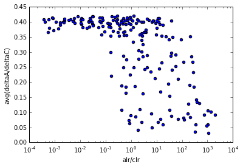
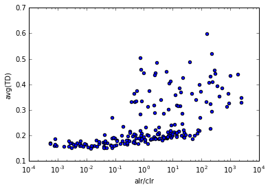
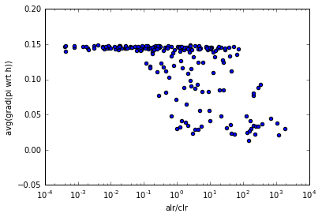

Visualizing Actor-Critic interactions
In this assignment I attempt to visually explore artifacts of Actor-Critic interactions.I implement the Actor-Critic method with linear/softmax function approximation, and run it and random sparse MDPs. The linear critic is trained with TD(0) and learning rate $\alpha$.
I create MDPs with a fixed number of states and random transition function, using a normalized spiky distribution (i.e. most state action pairs entail to some state with high probability, and all other states with low probability). In this scenario I set a small number of states to be terminal with some small reward. The goal of the agent is to find the terminal state with the best reward.
I also create ladder-like MDPs with a fixed number of states and semi-random transition function, again using a normalized spiky distribution, but that forces the agent to always move "up". On each step of the ladder there are many states each with different rewards, that the agent can each reach from the step below with a different action (with some randomness). The goal of the agent is to find the path through the ladded with maximum reward.
The figures that I plot will analyse 200 experiments on the same MDP, with varying learning rates for the Actor and the Critic. On these figures, each point is the result of an experiment.
First, let's recall the critic's update gradient. We assume that the critic is parameterized by $W$ and executes a softmax policy $\pi_W(a|s)=softmax(\phi(s)^TW)$ and has a learning rate $\beta$ $$\begin{align} dW&=\beta (r + \gamma V(s')-V(s))\nabla_W \log \pi_W(a|s)\\ &=\beta\delta \phi(s)\left[\nabla_{\phi(s)^TW}\pi(a|s)\right]^T/\pi(a|s)\\ &=\beta\delta \phi(s)\mu^T/\pi(a|s)\\ \end{align}$$ with $$\mu_b = \begin{cases} -\pi(b|s)\pi(a|s) & b\neq a\\ \pi(a|s)(1-\pi(a|s)) & b=a\\ \end{cases}$$
I've looked at many results which in the end seemed uninteresting. In the end I found something unexpected.
The first thing we can see experimentally is that the ratio $\alpha/\beta$ is *not* indicative of performance. In fact most experiments succeed, regardless of the ratio. What is interesting is the speed at which they succeed and the speed at which the agent is updated.
This figure shows the end average reward as a function of $\beta/\alpha$:
 The variance is normal and is due to the randomness of the underlying MDP. Essentially, all the learning procedures succeed to a reasonable policy.
The variance is normal and is due to the randomness of the underlying MDP. Essentially, all the learning procedures succeed to a reasonable policy.So this doesn't seem to tell us anything. In fact this result sort of surprised me, because I expected Actor-Critic to fail when the Actor was learning much faster then the Critic (right part of the figure), instead agents converge after a sufficient number of steps.
What's more intereseting with these results is to look at the relative rate of change of the Critic's weights and of the Actor's weights. Bacially, how fast does the Actor change, relative to the Critic, as a function of the ratio $\beta/\alpha$ (the Actor's learning rate over the Critic's learning rate):
 This shows that if the Actor changes slowly enough (left part of the figure), then both Actor and Critic will evolve at the same rate. If the actor's learning rate is too large (i.e. it tries to change too fast), then the value will actually change much more then the actor (right part of the figure).
I continue investigating by looking at the average TD error magnitude of the critic wrt to the ratio $\beta/\alpha$
 We see that if the actor learns too fast, the TD errors are large.
This makes sense, yet, in theory, since we update both the Actor and the Critic as a function of the TD error $\delta$ (see equations above), then both should change alot if the TD error is large. But that's not what we observed in the second figure. Why is that?
I hypothesise that this happens because when the Actor has a high learning rate, then it saturates faster, and a saturated softmax has a small partial gradient $\mu$ (see equations above), and thus gets stuck in saturated policies.
This is what we see here, by plotting the average magnitude of the partial gradient $\eta$ over the course of training where $$\eta=\nabla_h\pi(s|a)=\nabla_{\phi(s)^TW}softmax(\phi(s)^TW)$$ 